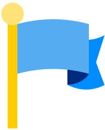

Fusion Analyst | Full Stack & Automation
Synovia Digital

Ireland (Remote)- Built a customs operations platform for several private logistics clients, filing GB–NI declarations through the API of HMRC’s Trader Support Service (TSS).
- Automated how shipment data comes in: emails read through Microsoft Graph, Excel uploads and a web portal, with the data extracted, validated and pre-filled.
- Built an internal platform for support and operations teams, with Microsoft Entra ID sign-in, role-based access and ticket analytics.
- Created jobs that repair missing Snowflake data straight from the SAP S/4HANA API, with automated reports.
- Developed Python backends (Flask and FastAPI) on Azure SQL, deployed with Docker.
- Helped define architecture, repository structure, deployment and development standards, and shared knowledge across the team.